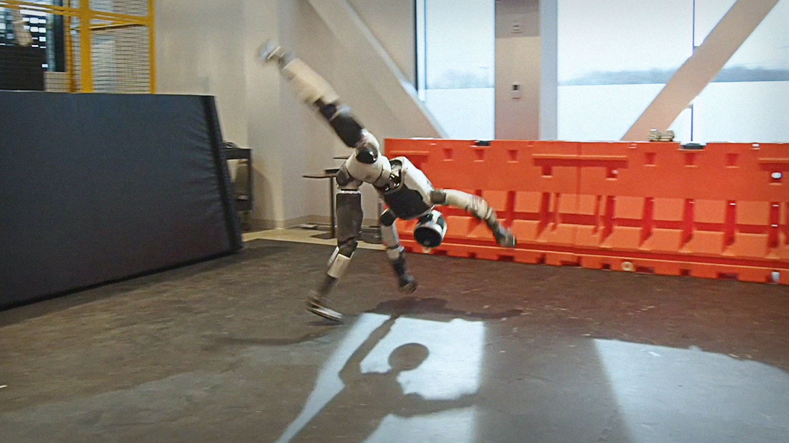
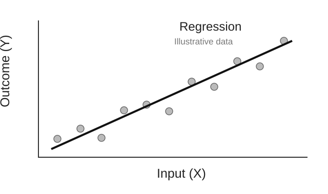
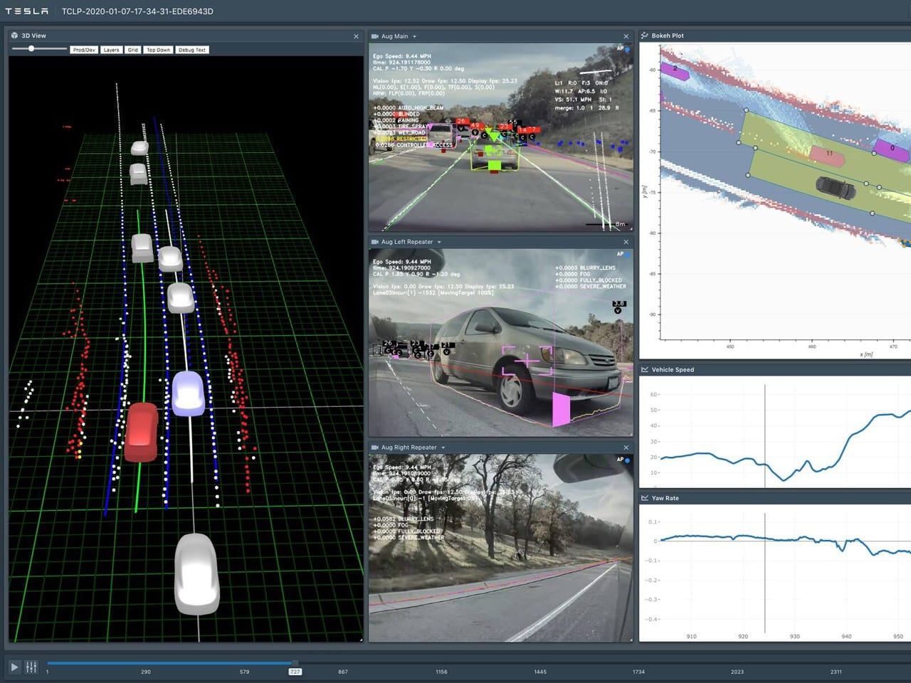
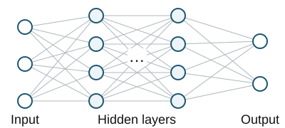

JOURNAL CLUB · PAPER REVIEW
Reliability of Handheld Ultrasound Assessment
of Brachial Artery Flow-Mediated Dilation
Using AI-Assisted Automated Analysis
in Postmenopausal Women
Wei-Di Chen · Yung-Chia Kao · Chun-Hsien Chiu · Chao-Chun Huang · Mei-Wun Tsai
휴대형 초음파와 AI 보조 자동 분석을 이용한
폐경 후 여성의 상완동맥 FMD 평가 신뢰도
Ph.D. Student · Sports Medicine
Applied Biomechanics Lab (ABL)
Incheon National University
Medicina 2026;62(1):181 · DOI 10.3390/medicina62010181
JOURNAL
Journal : Medicina
Peer-reviewed
Open access
Monthly medical journal
Publisher: MDPI
Official journal of the Lithuanian University of Health Sciences
| JCR category | Medicine, General & Internal |
| Indexing | SCIE · MEDLINE / PubMed · Scopus |
| 2025 CiteScore | 4.6 · General Medicine Q1 Scopus: 107 / 669 |
| Reviewed paper | 2026 · Volume 62 · Issue 1 · Article 181 |
MDPI official journal history · 2025 metrics, released 2026 · logo: MDPI official brochure
AUTHOR
Author : Wei-Di Chen
Wei-Di Chen
Assistant Professor
전자공학과 · Asia Eastern University of Science and Technology, Taiwan
Ph.D.
Physical Therapy and Assistive Technology
National Yang Ming Chiao Tung University
의공학·생체전자
연구방법론·생물통계 분석
본 논문의 제1저자 · 교신저자: Mei-Wun Tsai
현재 직함: 2026.08부터 조교수 / 논문 게재 당시 소속: NYCU
AEUST official faculty profile · Chen et al. (2026), author affiliations / contributions
AUTHOR
Author : AI 영상분석과 운동·재활 연구
Reliability of Handheld Ultrasound Assessment of Brachial Artery Flow-Mediated Dilation Using AI-Assisted Automated Analysis in Postmenopausal Women
Medicina · 2026 · 제1저자 (1/5)Association between Postoperative Rehabilitation Pathway, Dose, and Three-Year Mortality in Older Adults with Hip Fracture: A Nationwide Retrospective Cohort Study
Clinical Rehabilitation · 2026 · 공동저자 (4/6)The Impact of Taiwan’s Nationwide Postacute Care Program on Functional Recovery, Health Care Utilization, and Cost-Effectiveness for Patients With Stroke: A Systematic Review and Meta-Analysis
Archives of Physical Medicine and Rehabilitation · 2026 · 공동저자 (5/6)A Foundational Framework for High-Intensity Interval Training in Chronic Obstructive Pulmonary Disease: A Systematic Review and Meta-Analysis of Randomized Controlled Trials
Disability and Rehabilitation · 2026 · 공동저자 (4/6)A Systematic Review and Meta-Analysis of Randomized Controlled Trials on the Effects of High-Intensity Interval Training in Breast Cancer Survivors
Clinical Rehabilitation · 2025 · 공동저자 (3/5)AEUST 공식 교수 소개 · 학술지 논문 5편 · 실제 논문 제목·연도·저자 역할
MOTIVATION
Why I chose this paper : AI
Artificial Intelligence
Chen et al. (2026), title · 선정 동기: 발표자 연구 관심
MOTIVATION
Why I chose this paper : AI의 접근과 활용 사례
Large Language Models
문장 이해·생성·요약
ChatGPT / Claude

Reinforcement Learning
행동과 보상으로 제어 전략 학습
Atlas 동작 제어

Machine Learning
입력과 결과의 관계를 학습
Regression 예시

Computer Vision
영상에서 물체·영역·움직임 인식
Tesla 도로 인식 예시
OpenAI / Anthropic / Atlas RL / Tesla AI · Regression: 설명용 가상 자료
MOTIVATION
AI applications to sports science : Computer Vision
Object Detection
물체의 위치·종류
Bounding box로 표시
Segmentation
픽셀별 영역·경계 분리
Mask / boundary 추출
Pose Estimation
관절·신체 지점 위치
Keypoints 추출
[31] Redmon et al. (2016), Fig.1 · Cityscapes 실제 사진·정답 예시 · Google MediaPipe Pose Landmarker
MOTIVATION
AI applications to sports science : My projects
Pose Estimation → Motion Capture
움직임 영상에서 신체 지점 추정
→ 관절 좌표·동작 분석으로 연결
Marker detection · 사용자 제공 영상
Object Detection → Marker Recognition
영상 속 마커 위치 자동 탐지
→ 추적·라벨링 과정에 활용
발표자 진행 프로젝트 · 사용자 제공 Pose estimation 사진 / Marker detection 영상
MOTIVATION
Why I chose this paper : FMD 영상분석과 Segmentation
FMD 검사
커프 해제 전후 초음파 영상 촬영
초음파 영상분석
혈관 경계 분리 → 직경 측정
영상의 경계를 찾는 Segmentation을 FMD 측정에 활용
Quipu official FMD measurement example · Chen et al. (2026), Fig.5A
MOTIVATION
Paper focus : 반복 측정의 일관성
AI를 활용한 FMD 측정 방법의 Reliability 평가
같은 사람을 다시 측정했을 때
비슷한 FMD 값이 나오는가?
Test–retest reliability를 평가한 feasibility study
Chen et al. (2026) · between-day test–retest design · reliability-only feasibility study
Introduction
INTRODUCTION
Introduction : FMD와 혈관내피 기능
FMD (Flow-Mediated Dilation): 혈류 증가에 반응해
동맥이 얼마나 확장되는지 초음파로 측정
→혈관 내피세포 기능의
간접 지표
Baseline diameter
커프 압박 전 동맥 직경
Peak diameter
커프 해제 후 최대 확장 직경
직경의 증가율 (FMD%)로
혈관 내피의 확장 반응 평가
[9] Thijssen et al. (2019), Fig.1A · Chen Introduction [1,2,5–10]
INTRODUCTION
Introduction : 혈류 자극과 동맥 확장
전단 자극 증가
Chen §2.5 · [9] Thijssen et al. (2019) · 교육용 재구성 도식
INTRODUCTION
Introduction : 기존 FMD 검사의 장비·검사자 의존성
- 고해상도 초음파 장치와 안정적인 probe positioning
- 높은 장비 비용·기술적 복잡성
- 숙련된 검사자와 엄격한 촬영 조건
[9] Thijssen et al. (2019), Fig.2 · Chen Introduction [11,12]
INTRODUCTION
Introduction : HHUS의 휴대성과 접근성
Handheld Ultrasound
휴대성 · 접근성
| 선행연구 | 검증한 질문 |
|---|---|
| [16] Alsheikh-Ali 2006 | Portable ultrasound로 말초 내피기능 평가 |
| [18] Magnussen 2006 | 두 초음파 장비 사이 IMT / FMD 일치도 |
| [14] Jin 2022 | 휴대형 경동맥 초음파 측정의 활용·재현성 |
휴대형 영상 획득의 가능성
→ 영상분석 과정의 자동화로 관심 확장
Chen Introduction [13–19] · [18] Magnussen et al. (2006) · product photo: Leltek official
INTRODUCTION
Introduction : 휴대형·기존 초음파 장비의 측정값 비교
Portable · SonoSite Titan
5–10 MHz linear transducer
Standard · 고사양 상용 초음파
3–11 MHz linear transducer
제조사·모델명: 원문 미보고
R² = 0.48 · p < 0.001
환산 r ≈ 0.69
건강인 20명의 두 장비 FMD 측정값 비교
[16] Alsheikh-Ali et al. (2006) · Methods pp.623–624 / Fig.2C p.625 · r는 R²로부터 환산
INTRODUCTION
Introduction : 수동 영상분석과 AI 자동화
영상 후처리에 남아 있는 부담
분석할 영상 선별에 사람의 판단
영상 질과 검사자 숙련도에 영향
분석 시간 + 주관적 해석의 변동
AI-assisted image analysis
영상 속 혈관 경계 탐지와
직경 계산을 자동으로 지원
반복되는 분석 작업의 부담 감소
+ 분석의 효율성과 객관성 개선을 목표
Chen Introduction [9,20,21] · §2.1 / §2.5 · 저자들이 제시한 분석 목적
INTRODUCTION
Introduction : YOLO 기반 혈관 경계 분석
- YOLO = You Only Look Once
실시간 객체 탐지 framework - YOLOv12: attention 중심 detector
Area Attention · R-ELAN · FlashAttention - 이 논문: segmentation mask + 경계 탐색
→ 초음파 혈관 직경 계산
일반 객체 탐지 기술을 상완동맥 영상분석 workflow에 적용
[31] Redmon et al. (2016), Fig.1 · [34] Tian et al. (2025) · Chen Fig.1
INTRODUCTION
Introduction : 폐경 후 여성의 FMD 신뢰도 평가
Existing reliability studies
젊은층·중년층을 중심으로
같은 날 / 다른 날 반복검사
[47] Daniele · [48] Brook · [49] Marôco
Current study
폐경 후 여성에서
HHUS + YOLO-assisted workflow
7일 간격 측정의 안정성과 일관성
Chen §1 · 연구 공백의 선행 근거: [47] Daniele (2024), [48] Brook (2005), [49] Marôco (2023)
INTRODUCTION
Purpose
폐경 후 여성에서
휴대형 초음파(HHUS)와 YOLOv12 딥러닝을 결합한
상완동맥 혈류매개확장(FMD) 분석 절차의
날짜 간 검사–재검사 신뢰도를 평가한다.
Chen et al. (2026) · DOI: 10.3390/medicina62010181 · Abstract, p.1 / §1, p.2
Methods
METHODS
Methods : 모델 개발과 신뢰도 평가 설계
DEVELOPMENT
STUDY
Chen §2.1 / §2.3 · 이미지 수와 참가자 수를 구분
METHODS
Methods : 전문가 주석과 학습·시험 데이터 분할
HHUS 영상 400장 모두 · 숙련 기술자 1명의 수동 정답 경계
Image–Reference pairs · 400장
360장 · Model development
Training / Internal validation
모델 학습과 개발 과정의 성능 점검
40장 · Independent test
학습에서 별도로 유보
예측과 정답을 비교하는 최종 평가
Reference annotation · lumen–intima boundaries
Chen §2.1 · 입력 예시: Fig.5A · 실제 400장 annotation은 미공개
METHODS
Methods : 정답 경계 기반 Training과 내부 검증
360장의 이미지–정답 쌍 · Training / Internal validation

혈관 경계 예측
전문가가 표시한 정답 경계
실제 annotation은 미공개
예측과 정답의 차이 비교
차이가 줄도록
파라미터 조정
Chen §2.1 · 입력·출력 예시: Fig.5A/B · 실제 Training pair가 아닌 설명용 구성
METHODS
Methods : 독립 Test 데이터의 추론·평가
별도 40장 · 이미지만으로 추론한 뒤 전문가 정답과 비교
파라미터 고정 · 정답 입력 없음
혈관 경계·직경 추론
Prediction과 Reference의 차이로 모델 성능 평가
최종 test 평가를 기술했으나, 40장의 정량 정확도 결과는 미제시
Chen §2.1 · 40장 모델 test와 17명 Test–retest reliability는 별도 평가
METHODS
Methods : 원논문의 AI 분석 구조
Chen et al. (2026), Fig.1 · 원문 그림, 클릭하여 확대
METHODS
Methods : 폐경 후 여성의 두 방문 검사
- 지역사회 여성 55–70세
- 적격성 평가 25명
제외 8명 → 두 검사 완료 17명 - Test 1 → 7 days → Test 2
같은 오전 시간대·동일 검사자
Chen §2.3 / Fig.4 · 참가자 흐름과 두 방문 설계 · 상세 결과는 Results에서 제시
METHODS
Methods : 참가 기준과 제외 기준
Inclusion criteria
- 폐경 후 1년 이상
- BMI < 30 kg/m²
- 독립적 생활 가능
- Mandarin 또는 Taiwanese로 의사소통 가능
Exclusion criteria
- 최근 급성 근골격 손상 / 주요 심혈관 사건·수술
- 운동에 영향 주는 신경계 질환 / 내분비·결합조직·말초혈관 질환
- 호르몬·내분비 약제 / β-blocker·항염증·항응고제
- 조절되지 않는 고혈압 / 운동훈련 프로그램 참여
Chen §2.3 · 기간·질환 예시를 포함한 전체 기준은 상세 메모
METHODS
Methods : 검사 전 조건과 측정 환경
- 검사 전 24h 제한: 혈관작용 약물·알코올·카페인·자극제·격렬한 운동
- 최소 6h 금식 · 전날 충분한 수면
- 조용한 실험실 · 부드러운 조명 · 23–25°C
- 도착 후 15–20min supine rest
- 두 방문의 같은 오전 시간대 · 동일한 숙련 검사자
Chen §2.4 · 연구에서 요구한 준비조건
METHODS
Methods : 초음파 설정과 Probe·Cuff 위치
- LeSONO LU700 L · 10MHz / depth 3.2cm / dynamic range 50–55dB
- Pulse-wave Doppler · insonation angle 60°
- Probe: Upper arm · 팔꿈치 앞쪽에서 어깨 방향 5–10 cm · magnetic holder로 고정
- Cuff: Forearm · 팔꿈치 앞쪽에서 손목 방향 5 cm · Spirit CK-112P
Chen §2.4 · 위치 도식은 원문 설명을 바탕으로 재구성
METHODS
Methods : 9분 연속 녹화와 5분 혈류 차단
개인 SBP보다 최소 50mmHg 높게
약 9min 연속 화면녹화 → 저장 영상에서 offline analysis
Chen §2.4–2.5 · baseline 1min / occlusion 5min / post-deflation 3min
METHODS
Methods : Baseline·Peak 대표 프레임 선택
각 프레임의 AI 평균직경 → 5개 값의 평균 = Dbase
각 프레임의 AI 평균직경 → 5개 값의 최댓값 = Dpeak
선별 기준: 명확한 혈관벽 / 안정적인 probe / 최소 영상 노이즈
Chen §2.5 · recording duration과 실제 analysis window 구분
METHODS
Methods : 영상 업로드와 AI 분석·전문가 검토
프레임 선택·업로드·결과 검토는 사람 담당
AI-assisted / semi-automated workflow
Chen Fig.2 / Fig.3 · §2.5 single experienced vascular sonographer review
METHODS
Methods : 혈관 경계 탐지와 직경 계산
- Intima-to-intima 경계 탐지
- 여러 수직 scan line의 거리 측정
- 거리의 평균 → 프레임 직경 di
- Pixels → millimetres 변환
한 프레임의 평균직경을 계산한 뒤 baseline 평균 / peak 최대로 집계
Chen Fig.5A/B · §2.5 · 그림 속 값은 분석 예시
METHODS
Methods : FMD 계산식
dbi, dpi: 각각 baseline / peak window에서 선택한 프레임의 평균직경
Chen §2.5 · FMDabs / FMD% 정의 · 상단 프레임 집계 식은 문장 규칙의 수식화
METHODS
Methods : 신뢰도·측정오차·일치도 평가 지표
| 지표 | 평가하는 내용 | 해석 단위 |
|---|---|---|
| ICC + 95% CI | 사람 간 차이에 비해 반복값이 얼마나 일관적인가 | 상대적 신뢰도 |
| CV | 평균 대비 변동의 크기 | % |
| SEM / MDC95 | 측정오차 / 오차를 넘는 최소 변화량 | 원 측정 단위 |
| Bland–Altman bias & LoA | 두 방문 차이의 평균편향과 95% 일치한계 | 원 측정 단위 |
SPSS Statistics 29.0 · 연속변수 Mean ± SD · 범주형 변수 %
ICC: intraclass correlation coefficient
CV: coefficient of variation
SEM: standard error of measurement
MDC95: minimal detectable change
LoA: Limits of Agreement (일치한계)
Chen §2.6 · ICC / CV / SEM / MDC95 · Bland–Altman: Abstract 및 analysis reporting
METHODS
Methods : CV·SEM·MDC 계산식
Coefficient of variation
평균에 대한 SD의 상대적 크기
Standard error of measurement
원 측정 단위의 오차 추정량
Minimal detectable change
95% 수준에서 오차를 넘는 변화량
논문이 채택한 ICC 해석
< 0.50 Poor
0.50–0.74 Moderate
0.75–0.90 Good
> 0.90 Excellent
Chen §2.6 수식 · 원문 채택 범주: [38–42]
METHODS
Methods : 방문 간 일치도와 표본 수 산정
Bland–Altman agreement
두 방문의 차이 → 평균 차이 bias
차이의 분포 → 95% limits of agreement
위 식은 일치한계를 이해하기 위한 개념 설명
Precision-based sample size
반복측정 k = 2
예상 ICC 0.80
95% CI half-width ±0.15
탈락 허용 10%
계획 목표 27명
측정의 일관성·오차·일치범위를 함께 평가하는 설계
Chen §2.6 · 표본 수 정밀도 계획 [43,44] · LoA 식은 개념 설명
Results
RESULTS
Results : 참가자 특성
Table 1. Demographic characteristics (n = 17)
| Variables | Mean ± SD |
|---|---|
| Age (years) | 62.6 ± 4.1 |
| Height (m) | 1.56 ± 0.04 |
| Weight (kg) | 56.2 ± 5.3 |
| BMI (kg/m²) | 22.8 ± 1.9 |
| Years post menopause (years) | 8.9 ± 5.3 |
| Heart rate (bpm) | 65.2 ± 8.1 |
| SBP (mmHg) | 117 ± 12.6 |
| DBP (mmHg) | 75.1 ± 5.6 |
| MAP (mmHg) | 87.7 ± 7 |
BMI: body mass index (kg/m²)
SBP: systolic blood pressure
DBP: diastolic blood pressure
MAP: mean blood pressure
Chen p.8 · Table 1의 9개 변수 전체 · Mean ± SD · 편집 가능한 표 재구성
RESULTS
Results : 두 방문의 측정값과 신뢰도
Table 2. Descriptive statistics and test–retest reliability
| Variables | Test 1 | Test 2 | ICC (95% CI) | CV (%) | SEM | MDC95 |
|---|---|---|---|---|---|---|
| Dbase (mm) | 3.21 ± 0.32 | 3.31 ± 0.37 | 0.81 (0.54–0.92) | 3.26 | 0.31 | 0.85 |
| Dpeak (mm) | 3.41 ± 0.28 | 3.5 ± 0.35 | 0.76 (0.45–0.9) | 3.22 | 0.15 | 0.42 |
| MBV (cm/s) | 7.92 ± 2.45 | 8.98 ± 2.58 | 0.65 (0.27–0.86) | 14.28 | 0.65 | 1.82 |
| BF (mL/min) | 38.21 ± 13.22 | 46.98 ± 16.82 | 0.67 (0.29–0.86) | 18.2 | 4.64 | 12.86 |
| FMDabs (mm) | 0.2 ± 0.08 | 0.19 ± 0.08 | 0.81 (0.54–0.92) | 17.15 | 0.03 | 0.08 |
| FMD (%) | 6.36 ± 3 | 5.91 ± 2.93 | 0.87 (0.67–0.95) | 19.09 | 1.05 | 2.92 |
CI: confidence interval; CV: coefficient of variation
Dbase: baseline diameter; Dpeak: peak diameter
FMDabs: absolute flow-mediated dilation; FMD: flow-mediated dilation
BF: blood flow; ICC: intraclass correlation coefficient
MBV: mean blood velocity; MDC95: minimal detectable change
SEM: standard error of measurement
Chen et al. (2026), Table 2 · Mean ± SD
RESULTS
Results : 혈관 직경의 방문 간 일치도
Bias −0.10 mm
95% LoA −0.522 ~ +0.322 mm
R = −0.228 · p = 0.378
Bias −0.092 mm
95% LoA −0.520 ~ +0.335 mm
R = −0.297 · p = 0.246
X: 두 방문 평균직경 · Y: 두 방문 차이
실선: 평균 차이 · 점선: 95% 일치한계
Chen Figure 6 · 직경 그래프 2개 원본 crop · 수치는 그림 레이블 기준 · 원본에 패널 문자 없음
RESULTS
Results : FMD 반응의 방문 간 일치도
Bias +0.018 mm
95% LoA −0.108 ~ +0.146 mm
R = 0.049 · p = 0.853
Bias +0.44 %p
95% LoA −2.52 ~ +3.40 %p
R = 0.043 · p = 0.869
X: 두 방문 평균 FMD · Y: 두 방문 차이
실선: 평균 차이 · 점선: 95% 일치한계 (LoA)
Chen et al. (2026), Figure 6 · 원그림 표시값 · FMDabs: mm / FMD% 차이: %p
Discussion
DISCUSSION
Discussion : 반복측정 신뢰도와 활용 범위
YOLO 기반 FMD 평가의 날짜 간 반복성
저자들이 아는 한, YOLO 기반 딥러닝을 FMD 평가에 적용한 첫 실행 가능성·신뢰도 연구이다.
촬영·대표 프레임 선택·전문가 검토를 포함한 전체 절차의 반복성을 평가하였다.
Chen §4, p.9; §2.4–2.5
직경의 안정성과 FMD의 상대적 변동
| 지표 | ICC | CV | 해석 |
|---|---|---|---|
| Dbase | 0.81 | 3.26% | 양호한 ICC + 낮은 CV |
| Dpeak | 0.76 | 3.22% | |
| FMD% | 0.87 | 19.09% | 양호한 ICC + 큰 상대적 변동 |
| FMDabs | 0.81 | 17.15% |
생리적 변동·급성 심리적 스트레스에 따른 혈관 긴장의 영향 가능성
Chen Table 2, p.8; §4, pp.9–11; [52–55]
폐경 후 여성의 후속 응용 연구 활용
대상자는 지역사회 거주 폐경 후 여성 17명(55–70세)이었다.
횡단면·집단 수준 평가의 활용 가능성을 제안했으나, FMD의 변동성은 작은 개인 내 변화 탐지에 제약을 줄 수 있다.
임상적 유용성과 선별검사 성능은 후속 검증이 필요하다.
Chen §2.3, p.5; §4, pp.10–11
Chen et al. (2026) · DOI: 10.3390/medicina62010181 · §2.3, p.5 / Table 2, p.8 / §4, pp.9–11
Limitations
LIMITATIONS
Limitations : 기준 방법과의 타당도 비교 부재
평가한 항목: 반복측정 신뢰도
HHUS + AI
1차 방문
HHUS + AI
2차 방문
같은 절차로 날짜를 달리해 측정했을 때의 일관성
미평가 항목: 기준 방법과의 일치도
HHUS + AI
새 측정 절차
기준 방법
고해상도 초음파
기존 고해상도 FMD 기준 시스템과의 측정값 비교
반복성이 높아도 체계적인 측정오차가 존재할 수 있음
Chen et al. (2026) · DOI: 10.3390/medicina62010181 · §4, p.10 / §5, p.11 · 기준 초음파 시스템과의 직접 비교 없음
LIMITATIONS
Limitations : Shear rate·Area under the curve (AUC)
동시 측정의 제약
혈류속도와 동맥직경을 동시에 측정하지 못함
Shear rate·AUC 미산출
반응성 충혈의 자극 크기·누적량을 산출하지 못해 shear-rate 정규화 불가
직경 기반 해석의 한계
직경 변화만으로는 혈관내피 반응의 생리적 의미를 충분히 설명하기 어려움
Chen et al. (2026) · DOI: 10.3390/medicina62010181 · §4, p.10 · 혈류속도 측정 자체가 아닌 동시 측정의 한계
Conclusion
CONCLUSION
Conclusion
휴대형 초음파와 YOLOv12 딥러닝 모델을 결합한 분석 절차는 폐경 후 여성의 FMD를 날짜 간 일관되게 측정하였다.
기저·최대 직경과 절대·상대 FMD 모두에서 허용 가능한 반복성이 관찰되었다.
이 신뢰도 중심의 실행 가능성 연구는 향후 타당도 검증을 위한 예비 근거를 제공한다.
Chen et al. (2026) · DOI: 10.3390/medicina62010181 · §5, p.11 / 후속 검증 방향: §4, p.10
PATENT
Patent : 영상분석 기술과 등록 특허
논문에 보고된 특허
| 국가 | 대만 |
| 등록 기관 | 대만 지식재산국 (TIPO) |
| 특허번호 | I907279 |
| 논문상 등록상태 | 등록 발명특허 |
영상분석 구조·자료처리 흐름·
자동 혈관측정 방법의
공학적 구현
Chen et al. (2026) · DOI: 10.3390/medicina62010181 · §6, p.11 / 기술적 설명: §4, p.10의 저자 서술에 근거
Critical Review
CRITICAL REVIEW
Critical Review : 측정·학습·검증의 한계
Baseline·Peak의 심장주기 기준
| 방법 | 직경 변동 처리 |
|---|---|
| 본 논문 | Baseline: 5장 평균 · Peak: 5장 중 최댓값 프레임 선택의 심장주기 기준 미보고 |
| UNEX EF18G 사용 연구 | ECG R파 동기화 |
| MIA Brachial Analyzer | R파 동기화·비동기 영상 모두 지원 |
| Quipu FMD Studio | 연속 직경 분석 · 시간구간별 평균 직경 |
프레임 선택 차이 → Dbase·Dpeak와 FMD 변동에 영향을 줄 가능성
서로 다른 프레임 ≠ 독립적인 참가자
400장은 누구의 초음파 영상인가?
참가자 수·모집 대상·수집 시기 미보고
360장: 개발·내부 검증 / 40장: Independent test
신뢰도 검사 17명의 다른 프레임으로 학습했다면?
피험자와 영상 특징이 겹칠 가능성
Overfitting: 학습 자료에 과도하게 맞춰져
처음 보는 자료에서 성능이 떨어지는 현상
확인할 정보: 학습 영상의 출처 + 참가자 단위 분리
반복성 다음으로 필요한 정확도 평가
| 평가 대상 | 필요한 비교 지표 예시 |
|---|---|
| 분할 영역·경계 | Dice / IoU · 경계거리 (mm) |
| 혈관 직경 | MAE / RMSE (mm) · Bias / 95% LoA |
| 최종 FMD | 기준 방법과의 차이 · Bias / 95% LoA (%p) |
40장 Test의 정량 성능 결과와 기준 방법 비교 미제시
반복측정 ICC ≠ AI 정확도·기준 방법 대비 Validity
대상자와 측정 환경의 적용 범위
신뢰도 코호트: 폐경 후 여성 17명 · 55–70세
BMI <30 kg/m² · 주요 질환·약물 제외기준
확장할 대상: 남성 · 다양한 연령 · 비만·질환군
확장할 환경: 다른 기관 · 장비 · 검사자
초기 신뢰도 평가 → 목표 사용 집단을 반영한 외부 검증
개발·시험 영상 400장의 참가자 구성은 별도 미보고
360장의 제한된 학습·개발 자료
| 비교 자료 | 영상 수 | 자료의 용도 |
|---|---|---|
| 본 논문 | 360장 | Training / Internal validation |
| Jiang et al. (2025) | 12,194장 | 측정 가능 경동맥 영상 선별·영역 검출 |
| 우리 연구실의 AI 학습 사례 | 약 50,000장 | 학습 자료 · 발표자 제공 |
Jiang: train·test 전체 · 76명 · 참가자 단위 4:1 분할
다양한 피험자·영상 조건의 학습 범위와
새로운 자료에서의 일반화 성능 점검
Chen §2.1 · Jiang et al. (2025), Methods · 연구실 규모: 발표자 제공
Chen et al. (2026) · CLAIM 2024 · Metrics Reloaded · 발표자 검토
Test
TEST
Test : 경동맥 직경 추적 구현
우리도 해 볼 수 있지 않을까?
교내 초음파 장비로 얻어 두었던 경동맥 영상에 Segmentation 적용
Reviewed paper
상완동맥 · HHUS
YOLOv12 기반 분석
FMD의 날짜 간 신뢰도
Our implementation
기존 경동맥 영상 · YOLO11s-seg
내강 영역을 분리하여
프레임별 D(mm) 추적
현재 구현 범위: 직경 분석 · 커프 해제 FMD 검사는 후속 과제
발표자 구현 · 데이터·학습·평가 기록 · 저장소 확인: 2026-10-27
TEST
Test : 경동맥 초음파 데이터
초음파 영상 · 0008
경동맥 영상 0008 · 촬영 사진: 발표자 제공
TEST
Test : 내강 라벨링
발표자 구현 · 데이터·학습·평가 기록 · 저장소 확인: 2026-10-27
TEST
Test : 영상 단위 데이터 분할과 모델 학습
승인 라벨 215장
내강 있음 200장 / 없음 15장
| Split | Images | Video |
|---|---|---|
| Train | 162 | 0002·0004·0007·0008·0009 |
| Validation | 50 | 0005 |
| Test | 3 | 0006 |
YOLO11s-seg
COCO 사전학습 모델
→ Lumen 1 class로 fine-tuning
100 epochs · best: epoch 87
AdamW · learning rate 0.001
Batch 4 · input size 640
같은 영상의 프레임은 같은 split에 배치
참가자 단위 독립성은 미확인
발표자 구현 · 데이터·학습·평가 기록 · 저장소 확인: 2026-10-27
TEST
Test : 중심선 기반 혈관 직경 계산
내강 Mask에서 중심선 산출
양 끝을 제외한 중앙 70%
최대 81개 수직 거리 측정
유효 거리 평균 → Dpx
깊이 눈금 5 mm = 64.1 px
실패 프레임은 결측으로 유지
발표자 구현 · 데이터·학습·평가 기록 · 저장소 확인: 2026-10-27
TEST
Test : 혈관 경계와 직경 추적
0008 · 경계·측정선·프레임 직경
Diameter over time
공개 CSV의 프레임별 직경 불러오는 중
영상의 혈관 경계 → 시간에 따른 직경 변화로 정량화
학습에 포함된 영상의 구현 시연 · 새로운 피험자에서의 성능 검증은 별도
발표자 구현 · 데이터·학습·평가 기록 · 저장소 확인: 2026-10-27
TEST
Test : 전체 영상과 분석 기록
7개 영상 비교·직경 추적
원본 보기 / 추적 결과 / 프레임별 D·CSV
https://kwon-hj402.github.io/hjk-d-video-review/라벨·학습·평가 기록
데이터 분할 · 설정 · Mask 성능 · 계산 방법
https://kwon-hj402.github.io/hjk-d-video-review/research.html승인 프레임 Gallery
원본과 사용자 승인 영역 확인
https://kwon-hj402.github.io/hjk-d-video-review/gallery.html현재 공개 영상: 0002 · 0004 · 0005 · 0006 · 0007 · 0008 · 0009
GitHub: Kwon-hj402/hjk-d-video-review · commit 08b8afc
Future Research
FUTURE RESEARCH
Future Research : 기준 방법과의 Validity 비교
직경 분석
같은 영상에서 AI와 기준 판독 비교
AI D(mm) ↔ 여러 숙련자의 독립·가림 판독
MAE / RMSE (mm) · Bias / 95% limits of agreement
FMD 평가
상완동맥 FMD 자료를 새로 수집
표준화된 촬영·심장주기 처리·peak 탐색 기준 적용
AI workflow ↔ 기준 분석의 FMD% 일치도 비교
발표자 구현 · 데이터·학습·평가 기록 · 저장소 확인: 2026-10-27
FUTURE RESEARCH
Future Research : 분야 간 AI 연구 제안
우리 전공에서는?
분야 간 공동 연구 논의 · 문제 정의 / 데이터 / 기준 방법 / 일반화 평가
OUR PROJECT
감사합니다. · Q&A
감사합니다.
Q&A
Ph.D. Student · Sports Medicine
Applied Biomechanics Lab (ABL)
Incheon National University
Carotid diameter video review · Chen et al. (2026), Medicina 62:181
Appendix
APPENDIX
Appendix : FMD 수치의 참고 범위
일본의 표준화된 검사 체계에서 제안한 분류
| FMD (%) | 제안된 해석 |
|---|---|
| ≥ 7% | 정상 범주 |
| 4% 이상–7% 미만 | 경계 범주 |
| < 4% | 내피기능 저하 범주 |
같은 검사 조건에서는 높은 FMD가 더 양호한 확장 반응을 시사
연령·기저 혈관직경·커프 위치·분석 방법에 따른 차이
Maruhashi et al. (2019) · 일본의 기준 제안
APPENDIX
Appendix : 집단 간 FMD 차이와 측정오차
| 연구와 대상 | 비교 집단 | 평균 FMD% ± SD | 평균 차이 |
|---|---|---|---|
| Maruhashi et al. (2020) 일본인 7,277명 | 위험요인·심혈관병력 없음 위험요인 또는 병력 있음 | 7.5 ± 3.3% (n=1,542) 5.9 ± 2.9% (n=5,735) | 1.6%p |
| Kizhakekuttu et al. (2010) QRS 동기화 분석 | 건강한 46–70세 성인 제2형 당뇨군 | 6.6 ± 1.3% (n=14) 3.9 ± 2.0% (n=29) | 2.7%p |
Chen et al.: 개인 변화의 MDC95 = 2.92%p
작은 개인 변화의 판별에는 오차 부담 · 집단 평균 차이는 별도의 통계적 판단
Maruhashi et al. (2020) · Kizhakekuttu et al. (2010), Table 3 · Chen Table 2
APPENDIX
Appendix : Brachial Analyzer의 반복측정 신뢰도
Sonix SP + MIA Brachial Analyser · 19기관 · 위약군 재현성 하위연구 67명
| FMD% 재검사 간격 | ICC | CV |
|---|---|---|
| 48시간 | 0.80 | 15.6% |
| 3개월 | 0.74 | 18.3% |
| 9개월 | 0.58 | 24.9% |
동일 영상 재판독: 판독자 내 ICC 0.84–0.99 / 판독자 간 0.82–0.87
촬영자 인증·ECG 동기화·탐촉자 홀더·중앙 맹검 판독을 결합한 검사 절차
[21] Charakida et al. (2013), Table 2 · MIA, USA
APPENDIX
Appendix : FMD Studio의 분석 일치도와 반복성
FMD Studio · Quipu, Italy · 연구 당시 CNR 시스템의 검증 근거
같은 영상의 분석기 비교
Faita et al. (2011) · 60명
FMD Studio vs MIA Brachial Analyzer
| FMD% 비교 지표 | 결과 |
|---|---|
| Pearson r | 0.988 |
| Bias ± 차이의 SD (Studio − MIA) | −0.27 ± 0.59%p |
| ICC | 미보고 |
다시 촬영한 검사의 반복성
Ghiadoni et al. (2012)
7기관 · 건강인 135명
| 재검사 간격 | FMD CV |
|---|---|
| 1시간 | 9.9 ± 8.4% |
| 30일 | 12.9 ± 11.6% |
| ICC | 미보고 |
분석기 간 일치도와 촬영을 포함한 검사 반복성을 구분
Faita et al. (2011) · [20] Ghiadoni et al. (2012)
APPENDIX
Appendix : UNEX EF38G의 자동 분석과 수동 보정
Dobbie et al. (2020) · 43명 모집 → 32명 분석 · 같은 날 20분 간격으로 두 번 재촬영
| 각 검사에 적용한 분석 절차 | FMD ICC [95% CI] | CV |
|---|---|---|
| 장비 자동 출력 | 0.334 [−0.016–0.610] | 45.87% |
| 수동 경계 보정·품질관리 후 | 0.815 [0.655–0.905] | 11.40% |
전용 장비에서도 영상 품질·경계 확인에 따라 달라지는 재현성
각 분석 절차 안에서의 재검사 ICC · 자동값과 수동값 사이의 ICC와 구분
Dobbie et al. (2020) · UNEX EF38G